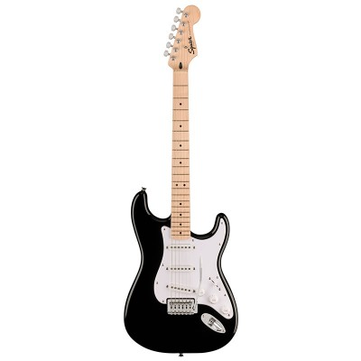
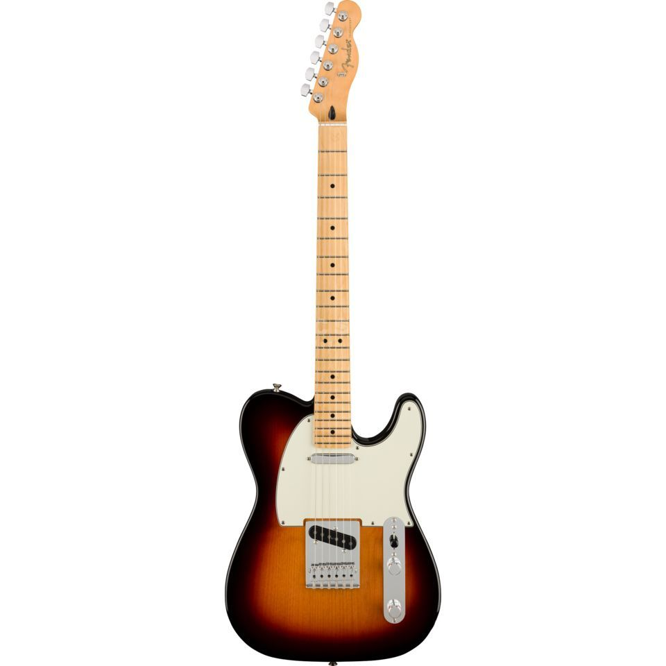
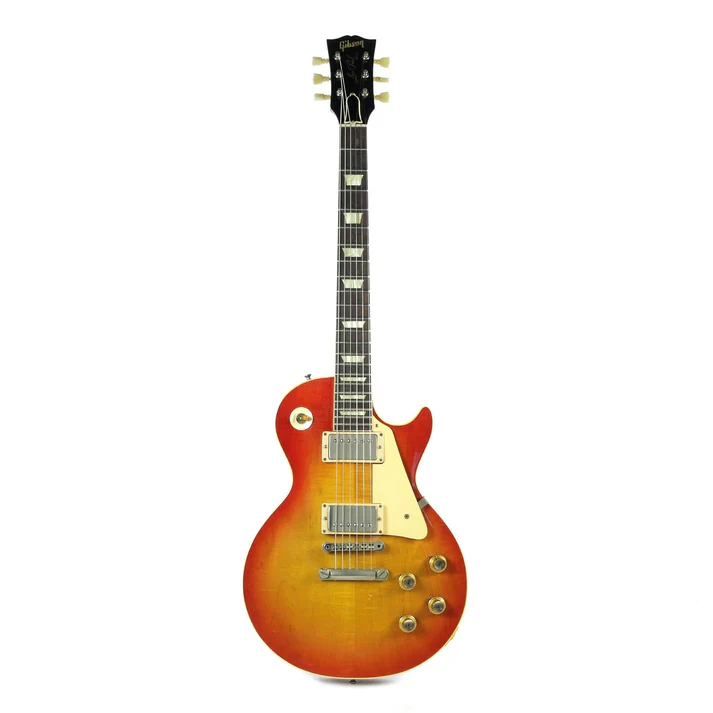
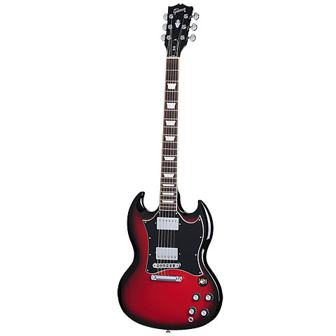

Stratocaster
The Stratocaster is one of the most iconic and widely recognized
electric guitars in the world.
Known for its distinctive design, versatility, and significant
influence on various music genres.

Telecaster
Designed by Leo Fender, it was introduced in the early 1950s and has
since become a staple in various musical genres.
The Telecaster is renowned for its simplicity, distinctive sound,
and rugged reliability.

Les Paul
The Les Paul guitar is a renowned model of electric guitar produced
by Gibson. Designed in collaboration with the innovative guitarist
and inventor Les Paul, the guitar was first introduced in 1952.
The Les Paul is celebrated for its rich, warm tone, sustain, and
elegant design.

SG
The SG guitar, formally known as the Gibson SG, is another iconic
model produced by Gibson.
Introduced in 1961 as a successor to the original Les Paul, the SG
(which stands for "Solid Guitar") quickly became popular due to its
distinctive design, lightweight body, and versatile sound.